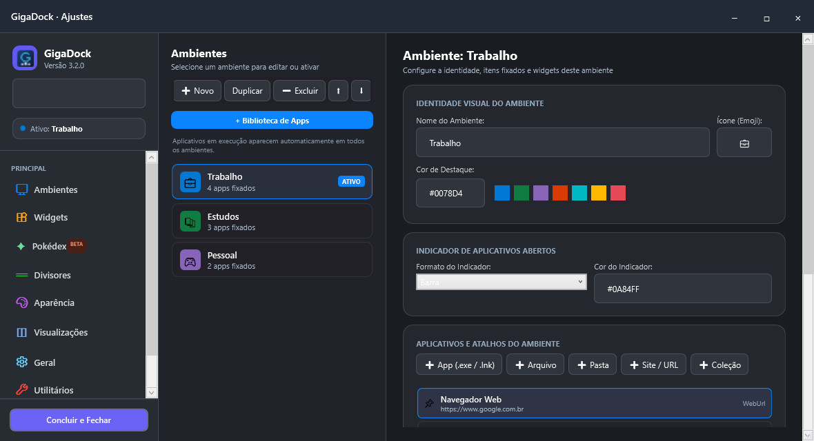
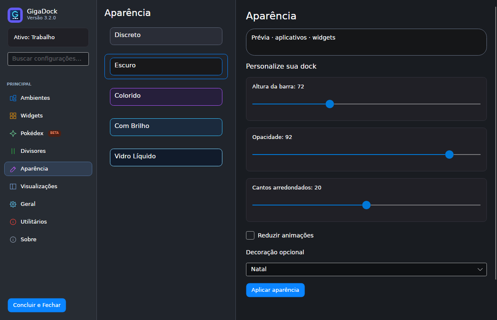
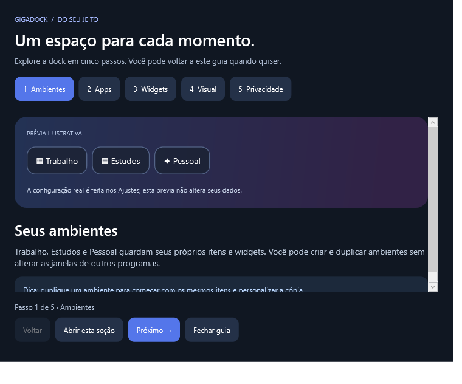

Instalação no seu usuário.
Pacote .tar.gz com runtime .NET incluído. O instalador usa Bash e Python 3, cria um atalho no menu e instala sem sudo. Bibliotecas do sistema podem precisar de instalação pelo gerenciador de pacotes.
Trabalho, estudos e tempo livre. Um ambiente para cada momento, com seus aplicativos e widgets do seu jeito. Disponível para Windows e com uma nova versão beta para Linux x64.
Veja capturas reais dos Ajustes no Windows, da aparência na beta Linux e do novo guia. Escolha uma tela para explorar.



Uma barra flutuante para reunir o que você usa e acompanhar o que importa.
Explore os recursos presentes no código. Cada cartão informa o alcance real da integração.
Alguns recursos e integrações ainda estão em beta. Consulte o README para conhecer o estado atual, as limitações e as ideias futuras.
A beta já tem ambientes, catálogo de aplicativos, widgets locais, Pokédex e aparência personalizável. As integrações e a compatibilidade variam conforme a distribuição e o desktop.
Pacote .tar.gz com runtime .NET incluído. O instalador usa Bash e Python 3, cria um atalho no menu e instala sem sudo. Bibliotecas do sistema podem precisar de instalação pelo gerenciador de pacotes.
Aplicativos do catálogo .desktop, notas, tarefas, relógio, calendário, Pomodoro e Pokédex. Música depende de playerctl/MPRIS; som depende de pactl. Atualizações são feitas reinstalando o pacote, preservando os dados.
Linux x64 com X11 ou XWayland. A lista e a ativação de janelas funcionam somente em X11 com wmctrl. Execução gráfica validada em Ubuntu via WSLg; GNOME/KDE completos, múltiplos monitores e outras distribuições ainda precisam de validação. ARM64 e Wayland nativo estão pendentes.
Com o pacote .tar.gz e seu arquivo .sha256, confira a integridade, extraia em uma pasta vazia e execute o instalador:
sha256sum -c GigaDock-3.2.0-linux-x64.tar.gz.sha256
tar -xzf GigaDock-3.2.0-linux-x64.tar.gz
bash GigaDock-linux-x64/install-linux.sh
"$HOME/.local/bin/gigadock"O pacote foi gerado para testes; o download público Linux ainda não foi publicado. Não há garantia de funcionamento em qualquer Linux. Consultar o guia Linux no repositório ↗
Windows 10/11 x64 e Linux x64 em beta. Consulte as releases para os downloads publicados e confira os requisitos do seu sistema antes de instalar.
Dados locais · sem conta ou telemetria · suporte Linux em evolução.